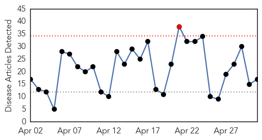
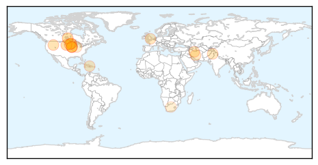
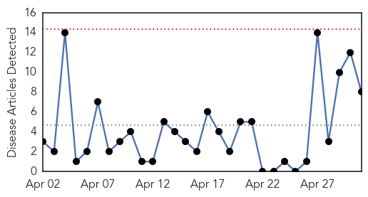

Influenza
30-Day Web Trend
1 alerts, 0 warnings

30-Day Twitter Trend
3 alerts, 0 warnings

Article Locations
Article Confidences

Top Articles:
- 0.995
- Bird flu epidemic becoming critical…(If This Jumps To The Swine…Off To The Races!!)
- 0.976
- Make extra effort to avoid spreading flu next year
- 0.930
- Bird flu outbreak could set U.S. record with 'probable' cases in Iowa
- 0.886
- Bird flu outbreak could set U.S. record with 'probable' cases in Iowa
- 0.859
- Bird flu outbreak could set U.S. record with ‘probable’ cases in Iowa
- 0.834
- Iowa Sick Birds Prompts Governor to Declare State of Emergency
- 0.773
- Iowa governor declares state of emergency due to bird flu outbreak
- 0.772
- Iowa declares state of emergency to fight bird flu 'epidemic'
- 0.751
- May 1, 2015 Archives
- 0.751
- April 30, 2015 Archives
- 0.751
- April 30, 2015 Archives
- 0.751
- April 30, 2015 Archives
- 0.751
- April 30, 2015 Archives
- 0.628
- Dog flu outbreaks temporarily close shelters, suspend adoptions
- 0.587
- Government of Canada announces funding to enhance influenza vaccine research and development - News Press Release
- 0.555
- Government of Canada announces funding to enhance influenza vaccine research and development
- 0.519
- Poultry industry on alert for bird flu
Top Tweets:
-
No tweets found for May 01, 2015
Cholera
30-Day Web Trend
0 alerts, 0 warnings

30-Day Twitter Trend
0 alerts, 0 warnings

Article Locations

Article Confidences

Top Articles:
- 0.963
- KIA motors helps Malawi
- 0.933
- Cholera claims 5 more lives in Ebonyi
- 0.729
- Disease fears hit Nepal’s quake-affected homeless
- 0.722
- Disease fears hit Nepal's quake-hit homeless
- 0.697
- Historical people that died of curable things
- 0.648
- 7 famous people who should have been cryogenically frozen when they died
- 0.617
- Towns And Villages Totally Devastated And 90% Clinics And Schools Are Unusable In Nepal
- 0.579
- Nepal earthquake: Wales donates almost £900,000 to appeal
Top Tweets:
-
No tweets found for May 01, 2015